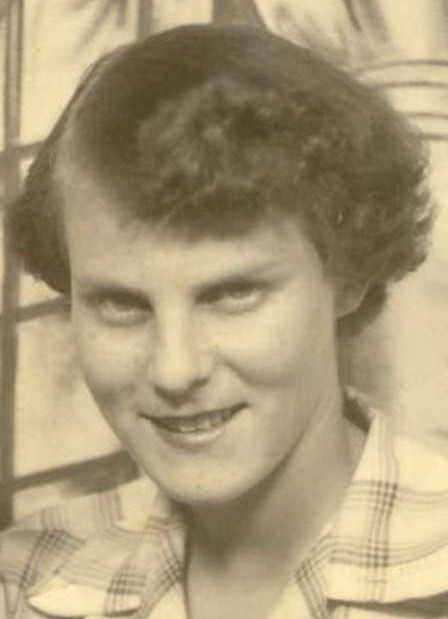
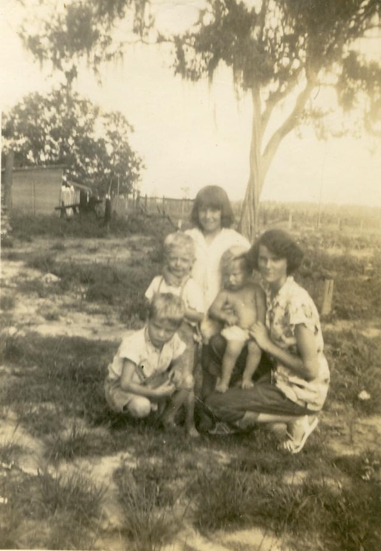
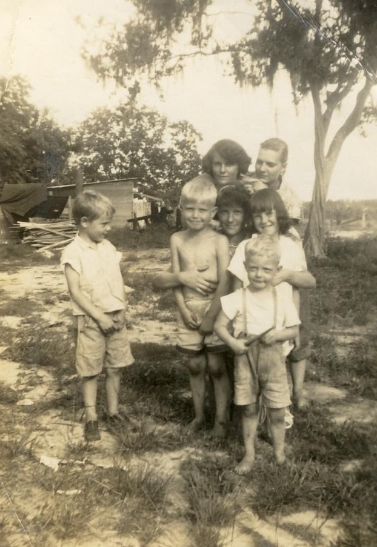
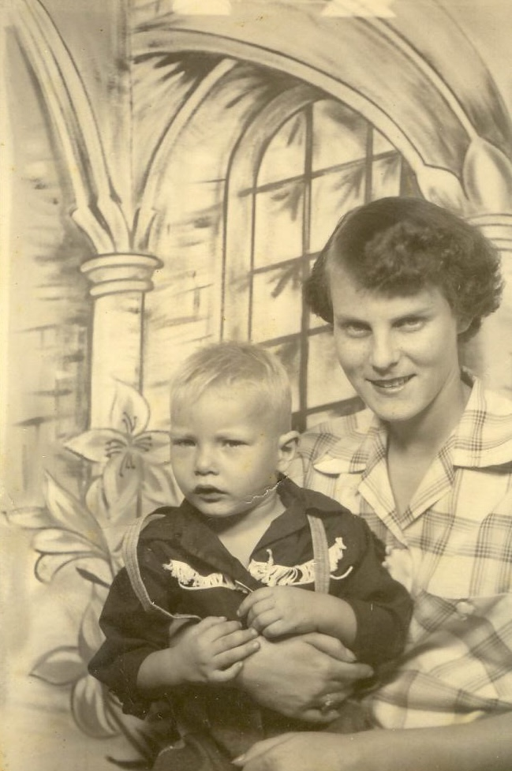
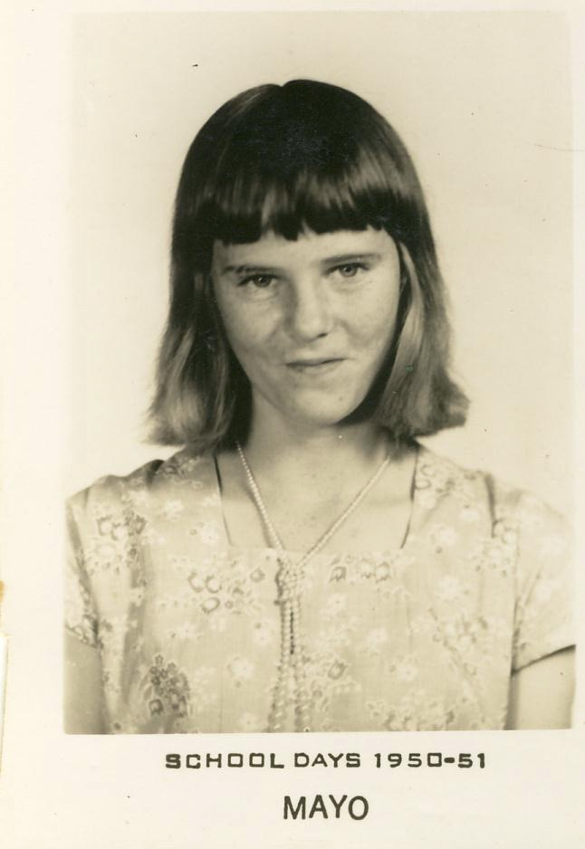
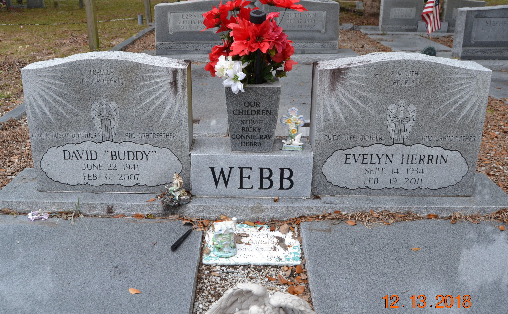

Evelyn Herrin
1934–2011

Life Events
Born: September 14, 1934 — Pearson, Atkinson, Georgia, United States
Died: February 19, 2011 — Florida, United States
Family
Father: William Levi "W.L." Herrin Sr.
Mother: Laura Etta Palmer
Siblings
- Deloris Herrin
- Dorothy Herrin
- Gladys Lucille Herrin
- Ida Mae "Shorty" Herrin
- James Talmadge Herrin Sr.
- Mary Lou Herrin
- Ollie Mae Herrin
- Shelby Jean Herrin
- William Levi "Billy" Herrin Jr.
Spouses:
Children
Military Service
No military service information has been added.
Biography
Evelyn Herrin was born on September 14, 1934, in Pearson, Atkinson County, Georgia.
In 1945, Evelyn was living with her parents, William Levi and Laura Etta Herrin, on Route 2 near Mayo in Lafayette County, Florida. The Florida State Census recorded Evelyn as a ten-year-old student living with several of her brothers and sisters. A surviving school portrait from the 1950–1951 school year further documents her connection to Mayo during her teenage years.
Evelyn spent part of her youth in Lafayette County, Florida. A surviving school portrait from the 1950–1951 school year identifies Mayo, Florida, as the location of her school photograph.
She was a daughter of William Levi Herrin and Laura Etta Palmer. She died on February 19, 2011, in Florida.
During her lifetime, Evelyn married Freddy Ray Mathis (1938–1967), John S. George, and David Brewer Webb (1942–2007). Florida divorce records document her divorce from John S. George in Pinellas County in October 1968 and from David Webb in Taylor County on June 6, 1975.
Evelyn died on February 19, 2011, in Perry, Taylor County, Florida, at the age of 76. She is buried at Waters Memorial Gardens in Steinhatchee, Florida, where a shared memorial commemorates her and David 'Buddy' Webb (1941–2007). The marker also names Stevie, Ricky, Connie Ray, and Debra as their children.
Photos




Grave & Burial

Waters Memorial Gardens, Steinhatchee, Taylor County, Florida
Sources
-
1940 United States Census — William Levi Herrin Household
Type: Census1940 United States Census recording William and Laura Etta Herrin and their family in Lafayette County, Florida. The family surname was recorded as Harring. The census reports their earlier residence in Georgia near the Pearson and Atkinson County area.
Location: Lafayette, Florida, United States
Household: William L. Harring Household
Household Members:
- William L. Harring, head, age 47
- Laura E. Harring, wife, age 40
- Ollie Mae Harring, daughter, age 22
- James Harring, son, age 20
- Ida Mae Harring, daughter, age 18
- Gladys Harring, daughter, age 15
- Mary Lou Harring, daughter, age 13
- Dorothy Harring, daughter, age 10
- Billie Harring, son, age 8
- Evelyn Harring, daughter, age 5
- Shelby Dean Harring, daughter, age 1
Supports: William Levi Herrin and Laura Etta Palmer residing in Lafayette County, Florida in 1940, The Herrin family's move from Georgia to Florida, Nine children residing with William and Laura Etta, Ollie recorded as Ollie Mae by 1940, William Levi Herrin Jr. recorded as Billie, Shelby Jean Herrin recorded as Shelby Dean
-
1945 Florida State Census — William Levi Herrin Family
Type: CensusThe 1945 Florida State Population Census records the household of William Levi Herrin (listed as W. L. Herrin) and his wife Laura Etta Herrin, living on Route 2 near Mayo in Precinct 3, Lafayette County, Florida. Their household includes seven children: James, Gladys, Mary Lou, Dorothy, Billy, Evelyn, and Deloris. Evelyn was recorded as age 10 and attending school. The youngest child is identified through family research as Deloris Herrin, although her name appears to have been recorded differently, possibly as 'Dean,' in the original census. Immediately preceding the Herrin household is the household of Louie Singletary, brother of Dewey Singletary. Louie's household includes his wife Lessie and their young son Randall. The consecutive entries document the presence of both branches of the family in the Mayo area in 1945.
Location: Precinct 3, Mayo, Lafayette County, Florida, United States
Household: William Levi Herrin Household
Household Members:
- W. L. Herrin, age 52, laborer
- Laura Herrin, age 46, housewife
- James Herrin, age 24, Army
- Gladys Herrin, age 20, laborer
- Mary Lou Herrin, age 17, student
- Dorothy Herrin, age 14, student
- Billy Herrin, age 12, student
- Evelyn Herrin, age 10, student
- Deloris Herrin, age 6 (name appears as 'Dean' or similar in the original census)
Supports: Residence of William Levi Herrin and Laura Etta Palmer in Lafayette County, Florida, in 1945, Identification of James, Gladys, Mary Lou, Dorothy, Billy, Evelyn, and Deloris as members of the William Levi Herrin household, Approximate birth years of the Herrin children, Evelyn Herrin's residence in her parents' household at age 10, School attendance of several Herrin children in 1945, James Herrin's reported Army service in 1945, Residence of Louie Singletary and his family in Lafayette County, Florida, in 1945, Consecutive enumeration of the Singletary and Herrin households
-
1950 United States Census — William Levi Herrin Household
Type: Census1950 United States Census recording William and Laura Etta Herrin and five of their children in Lafayette County, Florida. William was still working as a farmer.
Location: Lafayette, Florida, United States
Household: William L. Herrin Household
Household Members:
- William L. Herrin, head, age 58
- Laura E. Herrin, wife, age 55
- Dorothy Herrin, daughter, age 20
- Billy Herrin, son, age 17
- Evelyn Herrin, daughter, age 16
- Shelby J. Herrin, daughter, age 11
- Deloris Herrin, daughter, age 7
Supports: William Levi Herrin and Laura Etta Palmer residing in Lafayette County, Florida in 1950, William Levi Herrin working as a farmer, Dorothy, Billy, Evelyn, Shelby Jean, and Deloris residing with their parents, Deloris Herrin recorded as born in Florida